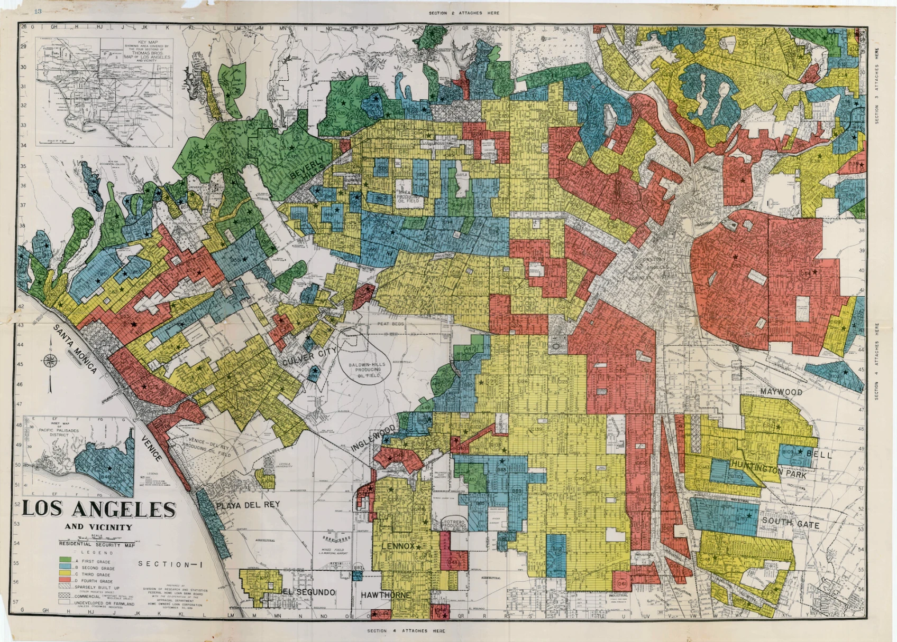
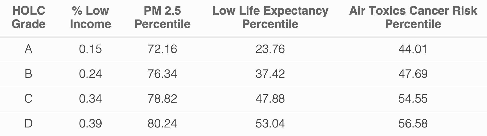

Environmental justice impacts of historical redlining in Los Angeles County
R
Quarto
Git
Spatial
EJ
Pollution
Present-day effects of past injustices
Author
Kristin Art
Published
December 13, 2023

1930 map of Los Angeles County neighborhoods divided into Home Owners’ Loan Corporation (HOLC) grades A (green; desirable) to D (red; undesirable). Photograph courtesy of Mapping Inequality
Environmental justice impacts of historical redlining in Los Angeles County
This blog post includes an analysis of community characteristics at the census block group level and explores the relationship between historical redlining and environmental justice patterns. The full analysis is available in this Github repository.
Research Question
How do historically redlined neighborhoods relate to current patterns of community health and bird biodiversity observations in Los Angeles (LA) County?
Background
The United States has a long history of institutionalized social and racial discrimination. The effects of such discrimination are long-lasting and can still be seen in today’s world. In recent decades, the amount of publicly available data on the inequities in environmental health and justice has increased. From this rise in data came a wealth of well-documented and reproducible research that all points to one conclusion: US communities that faced historical discrimination are still being profoundly disadvantaged.
The United States Environmental Protection Agency (US EPA) defines environmental justice as:
During the 1930’s, the Home Owners’ Loan Corporation (HOLC) rated neighborhoods from A to D based on their perceived safety levels for real estate investment as part of the New Deal. The intention of this action was to promote home ownership and stabilize real estate markets to overcome the Great Depression. However, the HOLC grades were then used to systematically block access to home ownership.
Historical HOLC grade categories given to neighborhoods based on perceived safety and desirability.
Financial institutions used these HOLC ratings to systematically deny money and home insurance to residents who lived in neighborhoods that were poorly graded. Because the worst HOLC grade was associated with the color red, this practice became known as “redlining.”
Redlining had substantial widespread impacts on both community wealth and health over time. The practice created economic disparities that increased poverty and decreased opportunities in the victimized neighborhoods. The long-term effects are well-studied and highly visible today. Overall, historically redlined neighborhoods:
have higher rates of illness from exposure to more pollutants 1
contain significantly less greenspace and tree canopy cover 2
and are significantly hotter than non-redlined neighborhoods due to the higher proportion of heat-retaining land cover.3
A recent study also found that historical redlining has impacted the geographic distribution of bird biodiversity observations in the US.4 Bird observation data is often crowd-sourced through citizen science, where normal community members (rather than niche scientists) report the species they see. The study found that very few bird observations come from historically redlined communities and are instead mainly provided from white and affluent neighborhoods.5 This fact is concerning because many conservation decisions are made based on these data, which clearly have a gap and spatial bias.
In this analysis, I explore the community characteristics of neighborhoods in LA county to determine how discriminatory redlining practices have left a lasting mark.
Data
EJScreen
I used data from the US EPA’s Environmental Justice Screening and Mapping Tool, known as EJScreen. The tool was created for community residents and other stakeholders to easily access environmental and demographic information (US EPA). It is also used to support a wide range of research and policy questions, particularly with regards to environmental justice. EJScreen data are available at the US census tract and block group levels; for this analysis, I used data at the block group level, which was downloaded from here.
Mapping Inequality
I also used digitized maps and information about the HOLC grades that were developed by a team of researchers at the University of Richmond. This effort was led by the Digital Scholarship Lab and is part of the Mapping Inequality project. In particular, I used a map of HOLC grade designations in Los Angeles County, which was downloaded from here.
Biodiversity Observations
Lastly, I used observations of bird biodiversity in Los Angeles County that were sourced from the Global Biodiversity Information Facility, which is the largest aggregator of biodiversity observations in the world. The observation data include the date and species of the observed organisms. For this analysis, I used bird observations in 2022, which was downloaded from here
Methods and Results
Environmental Justice (EJ) Characteristics
First, I explored the characteristics of block groups in LA county. To do so, I used the sf() and tidyverse() packages to load data from the EJScreen geodatabase, filter the observations to LA county, and summarize a handful of attributes.
Code
# read in EJScreen dataejscreen <-st_read("../data/EJSCREEN_2023_BG_StatePct_with_AS_CNMI_GU_VI.gdb/")# filter to LA countyLA_ejscreen <- ejscreen %>%filter(CNTY_NAME %in%c("Los Angeles County"))# find percentage of block groups where low-income households make up less than 5% of the populationlow_income_5perc <- la_county %>%filter(LOWINCPCT <"0.05") # EJScreen indicator name: LOWINCPCTperc_low_income_5perc <-round(as.numeric((length(low_income_5perc$LOWINCPCT)) / (length(la_county$LOWINCPCT)) *100), digits =1)# find percentage of block groups above the 80th percentile for PM2.5 and superfund proximitypm25_pnpl_80perc <- la_county %>%filter(P_PM25 >"80", P_PNPL >"80") # EJScreen indicator names for percentile PM 2.5 and percentile superfund proximity: P_PM25 and P_PNPLperc_pm25_pnpl_80perc <-round(as.numeric(length(pm25_pnpl_80perc$P_PM25) /length(la_county$P_PM25) *100), digits =1)
I found that low-income households make up less than 5% of the population in only 6.5% of LA county’s census block groups. This means low-income households make up at least 5% of the population in the remaining 93.9% of block groups.
I also found that 17.4% of LA county’s census block groups are above the 80th percentiles for both Particulate Matter 2.5 (PM 2.5) and Superfund proximity. This means a lot of people in LA are not only exposed to significantly high amounts of PM 2.5. air pollution, but also hazardous waste from nearby Superfund site. Superfund sites are designated by the US EPA as locations that have high amounts of hazardous waste; living in close proximity to such sites can negatively affect human health.
The wastewater discharge indicator in EJScreen quantifies the amount of wastewater that is discharged into the environment from industrial facilities, wastewater treatment plants, and other sources. Wastewater can result in negative health and environmental impacts. I used sf() and ggplot2() to effectively visualize the wastewater discharge indicator across space and identify which block groups fall above the 95th percentile of national values (Figure 1).
Figure 1: Wastewater discharge by block group in LA County. All Los Angeles County block groups except for Santa Catalina Island and Terminal Island are outlined in grey. Block groups are colored based on EJScreen wastewater discharge indicator values. Block groups that are above the 95th percentile of national values for wastewater discharge are identified by black dots.
Historical Redlining and EJ
Next, I investigated the relationship between historical HOLC grades and a variety of socioeconomic and health patterns. I used sf(), tidyverse() and ggplot2() to load, summarize, and visualize spatial HOLC grade data from the Mapping Inequality project for LA county (Figure 2). To do so, I had to ensure that all of my data had the same Coordinate Reference Systems (CRS) by reprojecting with the st_crs function from the sf() package. Then, I found that 889 block groups (out of 6591 total) fall within areas that received historical HOLC grades.
Code
# load redlining datala_redlining <-st_read("https://dsl.richmond.edu/panorama/redlining/static/citiesData/CALosAngeles1939/geojson.json") %>%st_make_valid() %>%drop_na()# check that the CRS matchst_crs(la_redlining) ==st_crs(la_county)# transform redlining data to same CRS as la county data (EPSG 3857)la_redlining_3857 <-st_transform(la_redlining, crs =st_crs(la_county))# check that the CRS match nowst_crs(la_redlining_3857) ==st_crs(la_county)# calculate the amount of rows that intersectbg_holc_intersect <-st_within(y = la_redlining_3857, x = la_county)bg_holc_logical <-lengths(bg_holc_intersect)n <-sum(bg_holc_logical)n# plotmap2 <-ggplot() +geom_sf(data = la_county_cropped) +geom_sf(data = LA_redlining, aes(fill = grade)) +scale_fill_manual(values =c("#97BB77", "#6AA08E", "#F4E07C", "#C25B60")) +labs(fill ="HOLC Grade") +annotation_scale(location ="br", style ="ticks", text_cex =3) +annotation_north_arrow(location ="br",pad_x =unit(0.4, "in"),pad_y =unit(0.2, "in"),style = ggspatial::north_arrow_nautical(text_size =35) ) +theme_bw() +theme(text =element_text(family ="quicksand"),axis.text.x =element_text(size =35),axis.text.y =element_text(size =35),legend.text =element_text(size =40),legend.title =element_text(size =45),panel.grid =element_line(color ="grey97") ) +guides(fill =guide_legend(keyheight =2, keywidth =2) )map2
Figure 2: Historical HOLC grades in LA County. All Los Angeles County block groups except for Santa Catalina Island and Terminal Island are outlined in grey. Block groups are colored based on historical HOLC grade categories; block groups that were not given historical HOLC grades are colored grey.
Next, I summarized current conditions within the block groups that received historical HOLC grades by calculating the mean, or average value, of the following EJScreen variables:
% low income
percentile for P articulate Matter 2.5
percentile for low life expectancy
percentile for air toxics cancer risk
To do so, I used the st_intersection() function from the sf() package to select only the 889 block groups that had historical HOLC grades assigned to them. Then, I used the kable() function from the kableExtra() package to summarize the mean of the variables of interest in a table (Table 1).
Code
# create intersection of redlining data and bg databg_holc <-st_intersection(x = la_redlining_3857, y = la_county)# EJScreen indicator names are shown below# percent low income: LOWINCPCT# percentile pm 2.5: P_PM25# percentile for low life expectancy: P_LIFEEXPPCT# percentile for low life expectancy: P_CANCER# summarize mean values of parameters of interestbg_holc_summary <- bg_holc %>%group_by(grade) %>%summarize("mean_lowincpct"=round(mean(LOWINCPCT, na.rm =TRUE), digits =2),"mean_ppm25"=round(mean(P_PM25, na.rm =TRUE), digits =2),"mean_lifeexppct"=round(mean(P_LIFEEXPPCT, na.rm =TRUE), digits =2),"mean_pcancer"=round(mean(P_CANCER, na.rm =TRUE), digits =2) ) %>%st_drop_geometry()# create summary tabletable1 <- bg_holc_summary %>%kable(html_font ="Quicksand", col.names =c("HOLC Grade", "% Low Income", "PM 2.5 Percentile", "Low Life Expectancy Percentile", "Air Toxics Cancer Risk Percentile"), escape =FALSE, align ="c") %>%# , caption = "Mean values of four EJScreen Indicators for block groups that were historically designated each HOLC grade."kable_paper(full_width =FALSE) %>%kable_styling(font_size =24, html_font ="Quicksand")table1

Table 1: Mean values of four EJScreen Indicators in block groups of each historical HOLC grade.
The results show that the mean value of all four EJScreen variables I looked at increase as HOLC grades decreases. This means that people who currently live in block groups that were given HOLC grades C (yellow) and D (red) in the past are exposed to higher amounts of environmental toxins (e.g., PM 2.5) and have higher health risks (e.g., risk of cancer from air toxics and lower life expectancy). Block groups that were given lower HOLC grades in the past also have a higher percent of low-income households in the present.
Historical Redlining and Biodiversity Observations
Lastly, I explored the relationship between historical HOLC grades and current bird biodiversity observations. I used the sf() and tidyverse() packages again to load the bird observation data, transform the CRS to match the other datasets, and select the observations that occurred in block groups that had historical HOLC grades. Then I found and visualized the percentage of birds from 2022 that were observed in block groups that were historically graded A-D by HOLC using ggplot2() (Figure 3).
Code
# read in birds databirds <-st_read(here::here("./data/gbif-birds-LA/gbif-birds-LA.shp"))# check CRS of birds datast_crs(birds)# transform bird data to EPSG 3857 CRSbirds_3857 <-st_transform(birds, crs =st_crs(la_county))# check that CRS matchst_crs(birds_3857) ==st_crs(la_redlining_3857)# find the intersection between birds and redliningbirds_redlining <-st_intersection(x = birds_3857, y = la_redlining_3857)# wrangle databirds_redlining_2022 <- birds_redlining %>%filter(year =="2022") %>%mutate(obs =as.numeric(1))# calculate total amount of bird observations in 2022total_n <-length(birds_redlining_2022$obs)# summarize percent of bird observations by HOLC grade categorybirds_redlining_summary <- birds_redlining_2022 %>%group_by(grade) %>%summarize(perc = ((sum(obs) / total_n)) *100) %>%st_drop_geometry()# plotplot1 <-ggplot(data = birds_redlining_summary) +geom_col(aes(x = grade, y = perc, fill = grade)) +geom_text(aes(x = grade, y = perc, label =round(as.numeric(perc))), vjust =-0.5, size =16, family ="quicksand") +# scale_fill_manual(values = c("#9C964A","#F3DF6C","#DC863B", "#C93312"))+scale_y_continuous(limits =c(0, 39), expand =c(0,0))+scale_fill_manual(values =c("#97BB77", "#6AA08E", "#F4E07C", "#C25B60")) +labs(y ="Percent of Total Observations (%)", x ="HOLC Grade", title ="Percent of Bird Observations in 2022 by Historic HOLC Grade", fill ="HOLC Grade") +theme_bw() +theme(text =element_text(family ="quicksand"),legend.position ="none",plot.title =element_text(size =45, hjust =0.5),axis.title.x =element_text(size =40),axis.title.y =element_text(size =40),axis.text.x =element_text(size =35),axis.text.y =element_text(size =35),panel.grid =element_line(color ="grey97"),panel.grid.major.x =element_blank() )plot1
Figure 3: Percentage of total bird observations in 2022 that occurred in block groups of each historical HOLC grade. Bar colors represent HOLC grades and values (%) are depicted above each bar.
I found that the majority of bird observations in 2022 actually occurred in neighborhoods that were historically HOLC grades C and D (36% and 29% respectively). This means that most of the bird observations last year were made in block groups that were historically given low HOLC grades rather than those that were given high HOLC grades.
Conclusion
Overall, I found that many residents of LA county are exposed to environmental health hazards like PM 2.5, hazardous waste, and wastewater discharge. The historical HOLC grades that were delineated in the 1930’s appear to be correlated to income status, air pollution, and health risks; current block groups that were historically given low HOLC grades have a higher percentage of low-income households, higher concentration of PM 2.5, higher cancer risk from air toxics, and lower life expectancy than block groups that were historically given high HOLC grades. Future analyses should investigate additional EJScreen indicators and statistically quantify the correlations.
On the other hand, current block groups that were historically given low HOLC grades had a higher amount of bird biodiversity observations in 2022. These results are surprising because I expected fewer bird observations from citizen scientists in disadvantaged communities (DAC). I originally guessed that individuals in DAC would have less time and resources to spend reporting bird observations than individuals in more affluent neighborhoods. The higher amount of observations that occurred in DAC could imply that there is bias in the data collection methods - it’s possible that researchers, scientists, or organizations focused additional effort in reporting bird sightings within those neighborhoods to document or combat the known environmental and educational disparities. It is also possible that communities within HOLC grades C and D are less developed and therefore contain higher amounts of natural habitats that birds and bird watchers gravitate towards. Future analyses should investigate whether this result is seen during other years and distill the potential reasons from the DAC themselves.
Footnotes
Gee, G. C. (2008). A multilevel analysis of the relationship between institutional and individual racial discrimination and health status. American Journal of Public Health, 98(Supplement_1), S48-S56. [DOI: 10.2105/AJPH.98.Supplement_1.S48]↩︎
Nardone, A., Rudolph, K. E., Morello-Frosch, R., & Casey, J. A. (2021). Redlines and greenspace: The relationship between historical redlining and 2010 greenspace across the United States. Environmental Health Perspectives, 129(1), 017006. [DOI: 10.1289/EHP6729]↩︎
Hoffman, J. S., Shandas, V., & Pendleton, N. (2020). The effects of historical housing policies on resident exposure to intra-urban heat: A study of 108 US urban areas. Climate, 8(1), 12. [DOI: 10.3390/cli8010012]↩︎
Ellis-Soto, D., Chapman, M., & Locke, D. H. (2023). Historical redlining is associated with increasing geographical disparities in bird biodiversity sampling in the United States. Nature Human Behaviour, 1-9. [DOI: 10.1038/s41562-022-01389-3]↩︎
Ellis-Soto, D., Chapman, M., & Locke, D. H. (2023). Historical redlining is associated with increasing geographical disparities in bird biodiversity sampling in the United States. Nature Human Behaviour, 1-9. [DOI: 10.1038/s41562-022-01389-3]↩︎